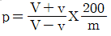
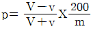
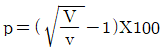
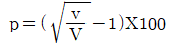
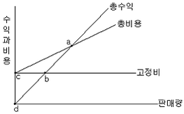

산림산업기사 (2016-03-06 기출문제)
1과목: 조림학
1. 발아시험기에 300립의 종자를 넣고 7일 후에 210립이 발아되었고, 그로부터 5일 후에 30립이 더 발아되었을 때 이 종자의 발아세는?
- 60%
- 70%
- 80%
- 90%
(정답률: 77%)

2. 종자로 산림이 형성되고 용재 생산을 목적으로 하는 산림은?
- 죽림
- 왜림
- 교림
- 중림
(정답률: 84%)
3. 종자휴면의 원인이 아닌것은?
- 배의 성숙
- 두꺼운 종피
- 생장촉진제 부족
- 생장억제물질 분비
(정답률: 78%)
4. 택벌림의 조건으로 옳지 않은 것은?
- 수고 분포는 상·하층 모두 양수 위주로 구성하여야 한다.
- 이상적인 택벌림은 소경급 중경급 대경급의 재적비율이 2:3:5을 기준으로 한다.
- 이상적인 택벌림은 소경급 중경급 대경급의 본수비율이 7:2:1을 기준으로 한다.
- 직경 분포는 직경이 커짐에 따라 본수가 줄어드는 지수감소형 분포를 유지해야 한다.
(정답률: 88%)
5. 자웅이주가 아닌 수종은?
- Ginkgo biloba
- Taxus cuspidata
- Ailanthus altissima
- cryptomeria japonica
(정답률: 68%)
6. 산성토양을 적합한 산도로 교정시키기 위한 방법으로 옳은 것은?
- 토양미생물을 감소시킨다
- 탄산식회, 생석회 등을 사용한다
- 치환성 K, Na의 시비를 적게 한다
- 치환성 Mg, Ca의 시비를 적게한다
(정답률: 86%)
7. 세포원형질을 구성하는 주체로 발아력을 왕성하게 하며 잎, 줄기, 뿌리를 증가시키고 작물의 생장을 도모하는 비료성분은?
- 질소
- 칼륨
- 인산
- 석회
(정답률: 62%)
8. 묘목간 거리를 2m X 2.5m로 식재시 4ha에 필요한 묘목본수는?
- 6000본
- 8000본
- 12000본
- 14000본
(정답률: 92%)
9. 식물 생육에 유효한 토양수분은?
- 흡습수
- 중력수
- 결합수
- 모세관수
(정답률: 92%)
10. 밀식에 대한 설명으로 옳지 않은 것은?
- 묘목 및 식재비용이 증가한다.
- 가지치기 비용을 줄일 수 있다.
- 임지 침식과 건조 피해가 줄어든다.
- 연륜폭이 넓은 목재를 얻을 수 있다.
(정답률: 83%)
11. 소나무 등의 양수를 조림할 경우 풀베기 방법으로 가장 적합한 방법은?
- 줄베기
- 점베기
- 모두베기
- 둘레베기
(정답률: 92%)
12. 소나무와 곰솔을 구분하는 식별기준으로 가장 적당한 것은?
- 잎의 수
- 유관속의 수
- 겨울눈의 색
- 솔방울의 모양
(정답률: 84%)
13. 육림과정에서 풀베기 작업에 대한 설명으로 옳은 것은?
- 풀베기작업 중에서 줄베기는 모두베기에 비하여 많은 인력이 소요된다.
- 추위로부터 조림목을 보호하기 위하여 9월 이후의 풀베기는 피하는 것이 좋다.
- 삼나무, 편백의 조림지에서는 묘목의 보호를 위하여 풀베기작업을 실시하지 않는다.
- 잡초가 무성한 곳은 한 번에 실시하고, 잡초가 적은 곳은 두 번에 나누어 실시한다.
(정답률: 78%)
14. 종자 정선 후 즉시 노천매장하는 수종이 아닌 것은?
- 벚나무
- 단풍나무
- 측백나무
- 들메나무
(정답률: 51%)
15. 광선을 많이 받는 양엽과 광선을 적게 받는 음엽의 특징을 설명한 것으로 옳은 것은?
- 음엽은 양엽보다 책상조직의 배열이 빽빽하다
- 음엽은 양엽보다 엽록소 함량이 상대적으로 많다.
- 음엽은 양엽보다 광포화점과 광보상점이 높고 호흡량도 많다.
- 양엽은 음엽보다 광선을 많이 받아서 잎이 상대적으로 넓다.
(정답률: 74%)
16. 「산림자원의 조성 및 관리에 관한 법률」에 규정된 “산림기술자”에 포함되지 않는 자는?
- 산림공학기술자
- 산림경영기술자
- 수목보호기술자
- 목구조관리기술자
(정답률: 84%)
17. 산림용 묘목규격의 측정기준이 아닌 것은?
- 근장
- 간장
- H/D율
- 근원경
(정답률: 53%)
18. 측방천연하종갱신을 위하여 군상개벌작업을 할때 가장 적당한 군상지의 면적은?
- 0.1ha
- 1.0ha
- 3.0ha
- 5.0ha
(정답률: 63%)
19. 조림용 묘목의 비료주기 방법으로 옳지 않은 것은?
- 속효성 비료는 상 만들기 직후에 준다.
- 지효성 비료는 상 만들기 1개월 전에 준다.
- 파종상에서의 추비는 1, 2차 솎음 후에 주며 늦어도 7월 중순까지 실시한다.
- 이식상에서의 추비는 묘목이 활착하기 전에 준다.
(정답률: 74%)
20. 묘목을 수하식재할 때 생육이 가장 양호한 수종은?
- 삼나무
- 소나무
- 이태리포플러
- 일본잎갈나무
(정답률: 39%)
2과목: 산림보호학
21. 담배장님노린재에 의하여 매개 전염되는 병은?
- 소나무 잎녹병
- 잣나무 털녹병
- 오동나무 빗자루병
- 대추나무 빗자루병
(정답률: 75%)
22. 식엽성 해충에 해당하지 않는 것은?
- 솔나방
- 매미나방
- 박쥐나방
- 미국흰불나방
(정답률: 75%)
23. 진딧물류가 알에서 부화한 것으로 단위 생식형의 암컷은?
- 간모
- 유충
- 약충
- 성충
(정답률: 67%)
24. 내화력이 강한 수종은?
- 편백
- 소나무
- 삼나무
- 분비나무
(정답률: 68%)
25. 벚나무 빗자루병의 병원체는 무엇인가?
- 담자균
- 자낭균
- 바이러스
- 파이토플라즈마
(정답률: 53%)
26. 살충제의 보조제로서 전착제의 특징이 아닌 것은?
- 유제의 유화성을 높인다
- 살포액이 넓게 퍼지게 한다
- 살포액 중의 약제입자를 약액 속으로 섞는다.
- 살포면에 부착된 약제가 비바람에 의해 유실되거나 날아가지 않도록 한다.
(정답률: 55%)
27. 볕데기(피소)에 관한 설명으로 옳지 않은 것은?
- 남서면의 임연부에서 피해를 줄일 수 있다.
- 수피 일부에서 수분이 과도하게 손실되어 초래된다.
- 수피에 코르크층이 발달되지 않은 수종이 피해가 심하다.
- 고립목의 줄기는 짚으로 둘러주거나 석회유 등을 발라 피해를 줄인다.
(정답률: 63%)
28. 자낭균의 무성생식으로 생성된 포자는?
- 난포자
- 자낭포자
- 유주포자
- 분생포자
(정답률: 63%)
29. 식물 뿌리·줄기·잎을 통하여 식물체내로 들어가 식물의 즙액과 함께 식물 전체에 퍼져 식물을 가해하는 해충에 작용하는 살충제는?
- 제충제
- 접촉살충제
- 소화중독제
- 침투성 살충제
(정답률: 81%)
30. 유충과 성충이 모두 잎을 가해하는 것은?
- 솔박각시
- 밤바구니
- 솔잎혹파리
- 오리나무 잎벌레
(정답률: 84%)
31. 수목병에 발생하는 병징이 아닌 것은?
- 탈락
- 총생
- 흰가루
- 시들음
(정답률: 69%)
32. 곤충의 특징으로 옳지 않은 것은?
- 겹눈과 홑눈이 있다.
- 다리는 보통 4쌍이고 7마디로 되어 있다.
- 배에는 마디가 있고 더듬이는 1쌍이 있다
- 몸은 크게 머리,가슴,배의 3부분으로 구분된다.
(정답률: 76%)
33. 병원균이 뿌리에 기생하면서 뿌리를 썩게 해 나무를 고사시키는 병은?
- 궤양병
- 수지동고병
- 유관속시들음병
- 자주빛날개무늬병
(정답률: 73%)
34. 잣나무 털녹병의 병징과 표징이 나타나는 시기와 병환부는?
- 7 ~ 8월에 잎에 나타난다.
- 3 ~ 5월에 뿌리에 나타난다.
- 4 ~ 6월에 줄기에 나타난다.
- 9 ~ 10월에 가지에 나타난다.
(정답률: 64%)
35. 목질부를 가해하는 해충이 아닌 것은?
- 소나무좀
- 선녀벌레
- 버들바구미
- 측백하늘소
(정답률: 73%)
36. 솔잎혹파리의 우화 최성기는?
- 4월 상순
- 6월 상순
- 8월 상순
- 10월 상순
(정답률: 78%)
37. 곤충이 음식물을 먹는데 쓰이는 입틀을 구성하는 기관이 아닌 것은?
- 큰턱
- 작은턱
- 윗입술
- 아랫입술
(정답률: 64%)
38. 여름포자 세대가 형성되지 않은 수목병은?
- 향나무 녹병
- 포플러 녹병
- 소나무 혹병
- 잣나무 털녹병
(정답률: 56%)
39. 유충기가 가장 긴 해충은?
- 솔나방
- 매미나방
- 어스렝이나방
- 미국흰불나방
(정답률: 71%)
40. 미국과 유럽의 밤나무림을 황폐하게 만든 밤나무 줄기마름병의 병원체는?
- 세균
- 자낭균
- 담자균
- 바이러스
(정답률: 57%)
3과목: 임업경영학
41. Pressler의 생장률(P) 식으로 옳은 것은? (단, V:현재재적, v:m년 전의 재적)




(정답률: 73%)
42. 정상임분의 축적이 3000본이나 현실임분의 축적이 2000본인 경우의 임목도는?
- 1.5%
- 6.7%
- 66.7%
- 150.0%
(정답률: 72%)
43. 임목자산의 성장성 분석지표로 가장 부적합한 것은?
- 임목 성장액
- 임목자산 증가율
- 임목의 감가상각비
- 성장액의 내부 보유율
(정답률: 73%)
44. 전체 임목을 몇 개의 계급으로 나누고 각 계급의 본수를 동일하게 한 다음 각 계급에서 같은 수의 표준목을 선정하는 방법은?
- 단급법
- Urich법
- Hartig법
- Draudt법
(정답률: 74%)
45. 강원도에서 잣나무를 잘라 측정해 보니 재직이 10.5m 원구 직경이 25cm 말구 직경이 15cm일때 잣나무 원목의 재적은?(오류 신고가 접수된 문제입니다. 반드시 정답과 해설을 확인하시기 바랍니다.)
- 0.225m3
- 0.236m3
- 0.330m3
- 0.340m3
(정답률: 43%)
46. 취득원가 2천만원 잔존가격 100만원 사용가능연수 10년인 기계가 있다 정액법에 의한 매년의 감가상각비는 얼마인가?
- 160만원
- 170만원
- 180만원
- 190만원
(정답률: 76%)
47. 임목의 육림비 구성에서 가장 높은 비율을 점유하는 항목은?
- 노동비
- 관리비
- 재료비
- 이자비
(정답률: 76%)
48. 임업경영의 성과분석으로 옳은 것은?
- 임업소득 = 임업조수익 - 임업생산비
- 임업소득 = 임업조수익 - 임업경영비
- 임업순수익 = 임업소득 - 임업경영비
- 임업경영비 = 임업순수익 - 임업조수익
(정답률: 73%)
49. 임업 또는 산림 생산의 사회적 의의를 더욱 발휘하고 인류 생활의 복리를 더욱 증진할 수 있도록 경영하는 지도 원칙은?
- 경제성의 원칙
- 공공성의 원칙
- 수익성의 원칙
- 합자연성의 원칙
(정답률: 79%)
50. 다음 도표에서 손익분기점은?

- a
- b
- c
- d
(정답률: 80%)
51. Glaser법을 이용한 산불피해지역의 피해액을 추정하려 할 때 필요한 인자가 아닌 것은?
- 주벌수입
- 벌기령(주벌시의 임령)
- 산불 발생년도 조림비
- 평가대상 산림의 임령
(정답률: 71%)
52. 어느 소나무림의 벌기가 50년이고 벌기마다 5000만원씩의 순수익을 얻을 수 있고 이율이 8%이면 소나무림의 자본가는?
- 약 95만원
- 약 109만원
- 약 121만원
- 약 132만원
(정답률: 53%)
53. 임지기망가가 최대값이 되는 시기에 대한 설명으로 옳지 않은 것은?
- 조림비가 클수록 임지기망가가 최대값이 되는 시기가 빨리 온다.
- 관리비는 임지기망가가 최대값이 되는 시기와는 관계가 없다.
- 간벌수익이 클수록 임지기망가가 최대값이 되는 시기가 빨리 온다.
- 적용하는 이율이 클수록 임지기망가가 최대값이 되는 시기가 빨리 온다.
(정답률: 56%)
54. 임업경영을 위한 수종을 선택할 때 유의해야 할 점으로 옳지 않은 것은?
- 가급적 단일 수종으로 선정한다.
- 조림기술에 맞는 수종을 선정한다.
- 향토 수종들 중에서 수종을 선정한다.
- 일시에 대량으로 수종을 변경시키지 않는다.
(정답률: 71%)
55. 산림수확조절을 위해 사용되는 계획모형의 모든 변수들의 관계가 수학적으로 1차 함수로 표현되어야 한다는 전제조건은?
- 확정성
- 제한성
- 선형성
- 비부성
(정답률: 70%)
56. 천연림 인공림으로 구분하여 조사하는 항목은?
- 임상
- 수종
- 지리
- 임종
(정답률: 68%)
57. Breymann은 직경생장률(Pd)과 재적생잘률(Pv)간에는 일정한 관계인 Pv = b x Pd가 성립한다. 이 식에서 b의 값은 Pd의 몇 배인가?
- 0.5
- 1
- 2
- 4
(정답률: 53%)
58. 임목 축적의 생장 중 화폐가치의 변동 도로등의 개설로 인한 운반비 절약 등에 기인하는 임목가격의 상승을 의미하는것은?
- 재적생장
- 형질생장
- 지위생장
- 등귀생장
(정답률: 79%)
59. 구분구적식으로 중앙단면적을 주로 이용하는 것은?
- Huber식
- Pressler식
- Hoppus식
- Newton식
(정답률: 79%)
60. 허가 또는 신고 없이 입목을 벌채할 수 있는 경우로 옳지 않은 것은?
- 산불 산사태로 피해를 입은 산림의 경우
- 수목원 조성계획의 승인을 얻은 산림의 경우
- 자연휴양림 조성계획의 승인을 얻은 산림의 경우
- 문화재청장이 소관 국유림에서 문화재보호를 위한 사업을 하는 경우
(정답률: 66%)
4과목: 산림공학
61. 임도의 횡단구조와 거리가 먼 것은?
- 노체
- 노면
- 곡선반지름
- 절·성토 비탈면
(정답률: 63%)
62. 계류의 유속완화와 유송토사의 퇴적 촉진을 위해 구곡에 시공하는 사방공작물로 주로 반수면만 축설하는 것은?
- 사방댐
- 골막이
- 둑쌓기
- 누구막이
(정답률: 73%)
63. 돌쌓기에 대한 설명으로 옳지 않은 것은?
- 돌을 쌓을 때 통줄눈을 피하고 파선줄눈이 되도록 쌓는다.
- 찰쌓기를 할 때에는 석축뒷면의 물빼기에 유의해야 한다.
- 돌을 쌓을 때 뒷채움의 사용여부에 따라 찰쌓기와 메쌓기로 구분한다.
- 돌쌓기 높이가 3m 이상이면 전부 또는 하부를 찰쌓기로 시공한다.
(정답률: 48%)
64. 지하수 분출로 인한 비탈면의 붕괴가 우려되는 지대에 가장 적합한 것은?
- 주입공사
- 속도랑배수공
- 돌림수로보내기
- 침투수방지공사
(정답률: 64%)
65. 빗방울의 튀김과 표면 유거수의 결과로 일어나는 침식은?
- 면상침식
- 누구침식
- 구곡침식
- 우격침식
(정답률: 62%)
66. 트랙터나 집재기 사용 제한에 가장 큰 인자는?
- 계절 및 온도
- 작업지의 경사
- 기계의 사용경비
- 노동력 투입 가능 정도
(정답률: 82%)
67. 강제틀댐에 대한 설명으로 옳지 않은 것은?
- 수질정화를 위해 축설한다.
- 틀 속에 돌, 토사 등을 채운다.
- 설치시 넘어짐 등의 안전사고에 유의해야 한다.
- 유수량이 적은 계류에서는 강제틀댐 하류에 바닥막이 설치를 생략한다.
(정답률: 64%)
68. 물에 의한 침식으로 옳지 않은 것은?
- 우수침식
- 지중침식
- 하천침식
- 유동형침식
(정답률: 66%)
69. 기계톱의 취급 및 운전방법으로 옳지 않은 것은?
- 연료는 휘발유와 윤활유의 혼합유를 사용한다.
- 엔진을 시동한 뒤 2~3분간 저속으로 운전한다.
- 안내판이 불량하면 쏘체인의 회전이 불안전하게 되고 진동이 생긴다.
- 엔진을 정지할 때는 엔진회전을 고속으로 해서 이물질을 털어낸 뒤 스위치를 끈다.
(정답률: 78%)
70. 측점간격이 20m이고 측점 0의 단면적이 2m2, 측점 1의 단면적이 4m2일 때 이 두 측점간의 토적량은?
- 60m3
- 80m3
- 100m3
- 120m3
(정답률: 57%)
71. 조재작업이 가능한 기계가 아닌 것은?
- 체인톱
- 포워더
- 프로세서
- 하베스터
(정답률: 65%)
72. 1:50000 지형도에서 도면상 1cm의 실제거리는?
- 50m
- 500m
- 5000m
- 50000m
(정답률: 63%)
73. 임도 설치시 토질 및 용수 등 지형여건을 종합 적으로 고려하여 절토사면에 대한 안정성이 확보되도록 기울기를 설정한다 다음 중 경암지역에 절토 경사면의 기울기 기준은?
- 1 : 0.3~0.8
- 1 : 0.5~1.2
- 1 : 0.8~1.5
- 1 : 1.5~2.0
(정답률: 58%)
74. 생산재의 품등에 영향을 미치고 규격이 맞는 경제성이 높은 목재를 생산하기 위하여 원목의 크기를 표시하는 것은?
- 조재목 검척
- 가지치기 작업
- 조재목 마름질
- 통나무 자르기
(정답률: 67%)
75. 임도에서 대피소 설치 간격 기준은?
- 300m이내
- 400m이내
- 500m이내
- 600m이내
(정답률: 83%)
76. 산지 녹화를 위한 씨뿌리기 공법의 종류로 옳지 않은 것은?
- 새심기
- 점뿌리기
- 줄뿌리기
- 항공파종공법
(정답률: 73%)
77. 지름 20~30cm 되는 자연석재로서 시공지 부근의 산이나 개울 등지에서 채취하며 기초공사 잡석쌓기 기초바닥용 콘크리트 기초바닥용 등에 많이 사용되는 석재는?
- 마름돌
- 견치돌
- 야면석
- 호박돌
(정답률: 62%)
78. 작업임도에 대한 설명으로 옳지 않은 것은?
- 산림사업을 위하여 필요한 지역에 설치한다.
- 각종 임내 작업을 능률적으로 실시하기 위하여 시설되는 간이 도로이다.
- 기계,자재,작업원 등을 가급적 작업지점에 가까운 곳까지 수송하여 집재 및 운재작업을 시작할 수 있도록 한다.
- 산림의 다면적 기능 발휘가 기대되는 넓은 산림지역을 이용구역으로 하고 이것을 경영관리 하기 위하여 필요한 골격적인 노선이다.
(정답률: 65%)
79. 임목 벌도 작업에서 이상적인 수구의 각도는?
- 0°~ 15°
- 15°~ 30°
- 30°~ 45°
- 45°~ 60°
(정답률: 65%)
80. 와이어로프 사용 금지 항목으로 옳지 않은 것은?
- 꼬임상태(킹크)인 것
- 와이어로프 소선이 10분의 1이상 절단된 것
- 와이어로프에 벌목된 나무의 껍질이 걸린 것
- 마모에 의한 직경 감소가 공칭직경의 7퍼센트를 초과하는 것
(정답률: 75%)